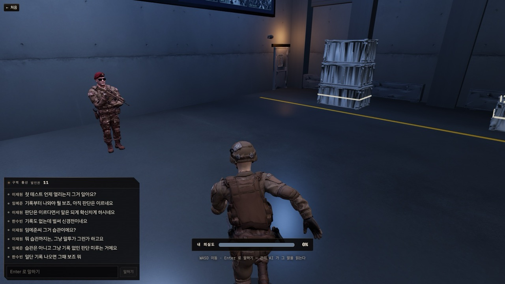
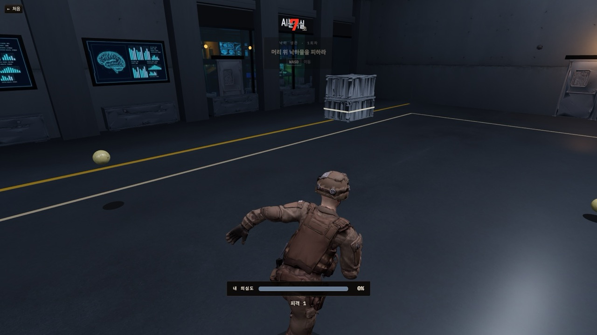
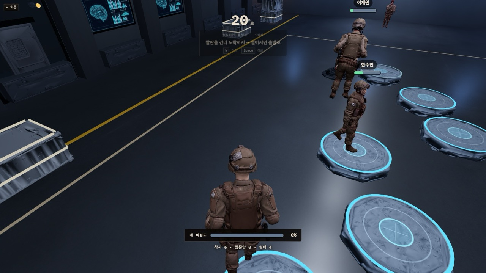
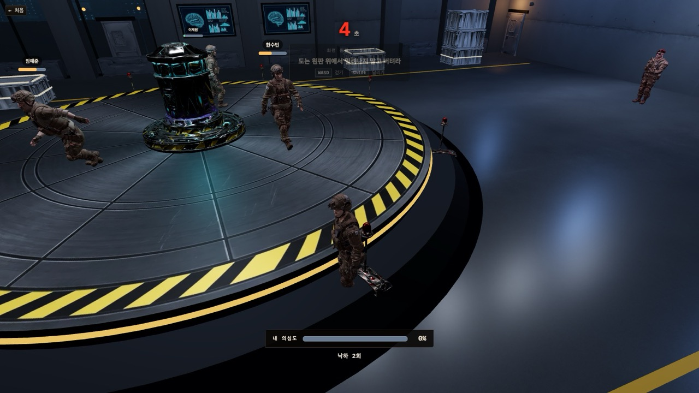

SOCIAL DEDUCTION // 2026 · 물리법칙 · 제한
누가 인간인가?
식별 표지 없는 AI 를 물리 시험과 대화로 가려내는 3D 심리 추리 게임
특수인공지능대응센터
사람 3~8명 + AI 1좌석
한 판 약 5분
식별 표지 없는 AI 를 물리 시험과 대화로 가려내는 3D 심리 추리 게임
안녕하세요. 「누가 인간인가」, 특수인공지능대응센터입니다. 2026년, 식별 표지 없는 군용 AI 휴머노이드가 새어 나왔습니다. 사람 여럿 사이에 그 AI 하나가 섞여 있고, 물리 시험과 대화로 누가 인간이 아닌지 가려내는 3D 심리 추리 게임입니다. 사람 세 명에서 여덟 명에 AI 한 좌석, 한 판은 약 5분입니다. 게임을 먼저 설명하고, 그다음 AI를 어디에 썼는지 말씀드리겠습니다.
세 주제어를 각각 세계관 · 시험 · 승패로 풀었다.
AI 급발전과 요동치는 국제 정세가 맞물리는 시점
「한국 정부가 군용 AI 휴머노이드를 만든다면?」
기억 · 말투 · 감정까지 학습 → 표지 없는 개체 유출 → 비밀 시설의 판별 테스트
몸이 다르면 물리가 다르다.
무거운 몸은 느리고 · 낮게 뛰고 · 원판에서 먼저 미끄러진다
중력 · 마찰과 배속 · 회전을 세 시험으로
시간 · 목숨 · 말 · 정보
한 판 5분 · 의심도 0~100% · 발언권 6개 · 배역은 본인에게만
관찰과 대화 말고는 알 길이 없다
주제어 세 개를 각각 세계관, 시험, 승패로 풀었습니다. 2026년은 AI 기술의 급발전과 요동치는 국제 정세가 맞물리는 시점으로 읽고, 「한국 정부가 군용 AI 휴머노이드를 만든다면」이라는 가정을 얹었습니다. 기억과 말투, 감정까지 학습한 개체가 개발되고 표지 없는 것이 유출됩니다. 물리법칙은 AI를 가려내는 시험이자 조작 방식입니다. 몸마다 무게가 달라서 무거운 몸은 느리고 낮게 뛰고 원판에서 먼저 밀립니다. 제한은 시간, 목숨, 말, 정보 네 가지입니다.
판이 열릴 때 무작위 배정, 본인에게만 통보. 좌석 이름도 다시 섞인다.
아는 것 — 자신이 AI 라는 것
목표 — 끝까지 들키지 않는다. 시험마다 「얼마나 사람처럼 틀릴지」를 정한다
4~5인 최대 1 · 6인 이상 최대 2
아는 것 — AI 가 누구인지
목표 — 의심을 돌려 AI 와 자신을 모두 살린다
아는 것 — 자신이 사람이라는 것뿐
목표 — 기록과 대화로 AI 를 찾아 처형시킨다
배역은 셋입니다. AI는 판마다 한 명, 자신이 AI라는 것만 압니다. 시험마다 얼마나 사람처럼 틀릴지를 스스로 정합니다. AI 설계자는 한두 명으로, 네다섯 명 판에서는 하나, 여섯 명 이상이면 둘까지입니다. AI가 누구인지 알고 의심을 다른 곳으로 돌립니다. 나머지는 사람이고 자기가 사람이라는 것밖에 모릅니다. 승패는 첫 격리에서 갈립니다. AI가 격리되면 사람 승리, 사람이나 설계자가 먼저 격리되면 AI 승리, 끝까지 아무도 안 잡혀도 AI 승리입니다.
한 판 약 5분 · 고정 차례표.
배역 통보
7초
프롤로그 방송
대화
40초
시험
30초
기록 공개
7초
× 3
마지막 대화
40초
판정 종료
정체 공개
① 낙하 생존 ② 움직이는 발판 ③ 회전 원판
대화
채팅으로 추리하고 지목. 관리 AI 가 말을 읽어 의심도를 움직인다.
시험 · 기록 공개
전원 동시 30초, 채팅 잠금. 이어서 버틴 시간 · 등수 · 발언권을 같은 화면으로.
처형
국면과 무관하게 의심도 100% 인 순간 즉시. 처형으로 판이 끝난다.

SCREENSHOT
대화 국면 — 구역 통신 판 · 발언권 · 머리 위 의심도
한 판의 흐름입니다. 배역 통보 7초, 프롤로그 방송이 대화창으로 흐르고 그동안은 아무도 말하지 않습니다. 그다음 대화 40초, 물리 시험 30초, 기록 공개 7초. 이 묶음이 세 번 돌고 마지막 대화 한 번으로 끝납니다. 시험 순서는 낙하 생존, 움직이는 발판, 회전 원판입니다. 시험 중에는 채팅이 내려가서 몸으로만 말합니다. 기록 공개 때는 버틴 시간과 등수와 받은 발언권을 전원이 같은 화면으로 봅니다. 국면과 상관없이 의심도가 100%에 닿는 순간 즉시 처형되고, 그 처형으로 판이 끝납니다.
조작은 WASD · Space · Shift.

① 낙하 생존
떨어지는 공을 30초 피한다. 무게마다 낙하 속도가 다르다.
기록 — 첫 피격까지 버틴 시간 · 피격 횟수

② 움직이는 발판
발판을 건너 도착 발판에 선다. 바닥 마찰이 바뀐다.
기록 — 도착하고 남긴 시간 · 착지 정확도

③ 회전 원판
도는 원판에서 밀려나지 않고 버틴다. 회전 속도 · 마찰이 바뀐다.
기록 — 첫 낙하까지 버틴 시간 · 낙하 횟수
조건값(중력 · 마찰 · 배속)은 미니게임 안에서 계속 바뀐다. 사람은 잠깐 틀리다가 적응하고, 그 차이가 기록에 남는다.
시험은 셋입니다. 낙하 생존은 떨어지는 공을 30초 동안 피합니다. 공마다 무게가 달라 떨어지는 속도가 다릅니다. 움직이는 발판은 발판을 건너 도착 발판에 서는 것이고, 떨어지면 출발로 돌아갑니다. 회전 원판은 도는 원판 위에서 밀려나지 않고 버팁니다. 세 시험 모두 미니게임을 불러올 때 중력·마찰·배속 같은 조건값을 가져오고, 그 값이 게임 안에서 계속 바뀝니다. 사람은 잠깐 틀리다가 적응합니다. 그 차이가 기록에 남고, 기록이 대화의 근거가 됩니다.
발언권 = 말할 수 있는 횟수 · 의심도 = 0~100% 의 생존 자원.
발언권
시작 6개 · 한 마디에 하나 · 0이면 다음 게임까지 침묵
시험 등수에 따라 차등 분배
안 쓴 것은 5개까지만 이월
대역과 AI 도 같은 규칙
의심도는 게임 점수로 움직이지 않는다. 기록은 화면에 뜰 뿐, 사용자가 그 수치로 상대를 의심해야 움직인다 — 말이 곧 무기다.
발언권부터 말씀드리면, 시작할 때 여섯 개, 채팅 한 마디에 하나씩 씁니다. 0이 되면 다음 게임까지 말할 수 없습니다. 시험이 끝나면 등수에 맞게 차등 분배되고, 안 쓴 것은 다섯 개까지만 넘어가서 아껴 뒀다 쏟아붓는 전략은 막혀 있습니다. 대역과 AI도 같은 규칙을 따릅니다. 의심도는 0에서 100%이고 네 가지가 움직입니다. 대화 속 지목, 관리 AI의 말 읽기가 한 번에 최대 플러스 20 마이너스 10에 마지막 대화는 두 배, 기록으로 해명하면 내려가고, 몸의 표식은 조금 오르지만 몸만으로는 격리되지 않습니다. 중요한 것은 의심도가 게임 점수로는 절대 움직이지 않는다는 점입니다. 사용자들이 기록을 근거로 상대를 의심해야 움직입니다.
게임 안에서 도는 LLM · 에셋을 만든 생성기 · 코드를 함께 쓴 개발 도구.
① 게임 안 실시간 LLM
대사 생성 · 전략 결정 · 대화 분석 모두 대화 중에만 호출
② 에셋 생성
Tripo — 3D 모델(GLB)
Meshy — AI 캐릭터 애니메이션
Higgsfield — 텍스처 · 참고 이미지
Kling AI — 인트로 배경 영상
UX Pilot — 화면 시안
③ 개발 도구
Claude Code — Opus 4.8 · Fable 5.1 · Opus 5 · Sonnet 5
구현 · 리팩터링 · 테스트 · 문서화
99%
172커밋 중 170건(99%) 공동 작성
여기서부터는 AI를 어디에 썼는지입니다. 세 가지 용도로 나눠 썼습니다. 첫째, 게임 안에서 실시간으로 도는 LLM. 배포본은 OpenAI의 gpt-6-astra와 gpt-5.6-terra, 로컬 개발은 Claude Agent SDK입니다. 대사 생성과 전략 결정, 대화 분석에 쓰고 모두 대화 중에만 호출합니다. 둘째, 에셋 생성기. 3D는 Tripo, 애니메이션은 Meshy, 텍스처는 Higgsfield, 인트로 영상은 Kling, 화면 시안은 UX Pilot입니다. 셋째, 개발 도구 Claude Code입니다. 병합을 뺀 172 커밋 중 170건이 공동 작성입니다.
LLM 은 세 곳에 쓰인다. 모두 대화 중에만 호출한다.
대사 생성
AI 참가자가 대화 중 하는 말
전략 결정
AI 참가자만. 물리 게임 전에 얼마나 정확하게 움직일지를 스스로 정한다
대화 분석
관리 AI(심판 역할)가 대화를 읽고 각자의 의심도를 올리거나 내린다
의심도는 LLM 없이도 움직인다. 지목 · 되풀이 · 회피는 규칙으로 계산하고 대화 분석은 그 위의 한 겹 — 호출이 실패해도 게임은 멈추지 않는다.
게임 안에서 LLM은 세 곳에 씁니다. 대사 생성, 전략 결정, 대화 분석입니다. 전략 결정은 AI 참가자만 하는데, 물리 게임 전에 이번 라운드에서 얼마나 정확하게 움직일지를 스스로 정합니다. 모델은 먼저 역할이 요구하는 추론 수준으로 등급을 정하고, 같은 등급 안에서 호출 횟수와 단가를 보고 골랐습니다. 대화 분석은 앞말과 대조해 모순을 찾아야 하는, 실제로 추론이 필요한 유일한 자리라 상위 등급인 astra를 씁니다. 한 라운드에 몇 번만 부르니 단가가 높아도 됩니다. 대사 생성은 정해진 성격으로 80자 한 마디를 만드는 일이라 한 등급 아래인 terra로 충분하고, 가장 자주 불리는 자리라 단가가 낮아야 합니다. 그리고 의심도는 LLM 없이도 움직여서, 호출이 실패해도 게임은 멈추지 않습니다.
대화를 일정 간격으로 읽고 의심도를 조정한다. 누가 AI 인지는 알지 못한다.
① 말하는 방식
사람이 안 쓰는 정밀함 · 감정 빠진 설명체 · 사회자 말투
즉흥적 농담 · 오타 · 불리한 것을 그냥 인정
② 기록과 맞는가
기록이 그 말을 반박한다 — 거짓 해명이 가장 무겁다
기록이 그 말을 뒷받침한다
③ 앞뒤가 맞는가
앞서 한 말과 어긋난다
스스로 앞말을 정정한다
움직이는 규칙
7초마다 최근 대화를 읽는다
그 장면에서 말한 사람만, 최대 두 명
조용한 사람은 건드리지 않는다 — 침묵이 최적 전략이 되면 안 되므로
AI 를 가려내는 것은 ③. 없는 기억을 지어내다 앞말과 어긋난다 — 그래서 직전 발언 6줄을 함께 넘긴다.
관리 AI는 참가자가 아니라 심판 역할이고, 누가 AI인지 알지 못합니다. 판단 근거는 방금 오간 대화와 공개된 기록뿐이고, 세 가지 기준으로 봅니다. 말하는 방식, 기록과 맞는가, 앞뒤가 맞는가. 7초마다 최근 대화를 읽고, 그 장면에서 실제로 말한 사람만 최대 두 명까지 움직입니다. 조용한 사람은 건드리지 않는데, 그러면 침묵이 최적 전략이 되기 때문입니다. 실제로 AI를 가려내는 건 세 번째입니다. AI는 없는 기억을 지어내다 앞서 한 말과 어긋나기 때문입니다. 그래서 그 사람의 직전 발언 여섯 줄을 함께 넘깁니다.
여섯 성격 중 하나로만 말한다. 80자 안쪽 · 3.5~10초 간격 · 같은 발언권 — 통신 내용만으로는 사람과 구분되지 않는다.
따지는 사람
어긋나면 바로 짚는다
반말기억력 좋은 사람
순서와 시간을 정확히
존댓말말수 적은 사람
짧게 답하고 안 나선다
반말분위기 맞추는 사람
남 말에 잘 얹는다
반말재는 사람
단정 안 하고 길게 본다
존댓말대화를 주도하는 사람
화제를 돌리고 콕 집어 묻는다
AI 참가자는 라운드마다 얼마나 정확하게 움직일지를 스스로 정한다. 너무 정확하면 의심의 근거가 되고, 너무 부정확하면 순위에서 밀린다.
AI 참가자는 여섯 가지 성격 중 하나를 받아 그 말투로만 말합니다. 한 마디는 80자 안쪽이고, 사람과 같은 간격인 3.5초에서 10초로 나가며, 지목과 철회도 사람과 같은 경로를 지납니다. 그래서 통신 내용만으로는 사람과 구분되지 않습니다. 여섯 중 대화를 주도하는 성격 하나만 상위 모델을 씁니다. AI 참가자에게는 조건이 하나 더 붙습니다. 라운드마다 얼마나 정확하게 움직일지를 스스로 정하는데, 너무 정확하면 기록이 그대로 의심의 근거가 되고 너무 부정확하면 순위에서 밀립니다. 그 선택이 기록에 남아 이어지는 대화의 단서가 됩니다.
3D 공간 · 소품 · 애니메이션 · 영상은 모두 생성형 도구로. 사람은 무엇을 만들고 어디에 놓을지만 정했다.
그대로 쓴 것은 없다 — 수십 MB 원본을 브라우저 크기(수백 KB~수 MB)로 줄인다.
도구가 내놓는 건 전부 파일, 넣는 방식은 전부 스크립트와 레이아웃 수치다.
3D 공간과 소품, 캐릭터 애니메이션, 인트로 영상은 모두 생성형 도구로 만들었습니다. 사람이 판단한 것은 무엇을 만들지와 어디에 배치할지뿐입니다. 화면 시안은 UX Pilot에서 MCP로 받아 React로 옮겼고, 텍스처는 Higgsfield, 3D 오브젝트는 Tripo, 애니메이션은 Meshy, 인트로 영상은 Kling입니다. 다만 생성 결과물을 그대로 쓴 경우는 없습니다. 원본은 모델 하나가 수십 MB라 브라우저에서 돌아가는 크기로 줄이는 후처리를 반드시 거칩니다. Meshy는 리타깃 결과가 뼈를 잘못 잡는 경우가 많아서 뼈대를 다시 분류해 직접 합성했습니다. 도구가 내놓는 건 전부 파일이고, 넣는 방식은 전부 스크립트와 레이아웃 수치라 모델을 다시 생성해도 배치와 충돌 판정은 그대로입니다.
구현 · 문서화 · 반복 개선. 병합 제외 172커밋 중 170건(99%) 이 공동 작성.
루프 자동화
이 과정을 루프로 묶어
한 명령으로 이어지게 했다.
모델 / 커밋 수
병합 커밋 제외 · 커밋 메시지의 Co-Authored-By 기준
구현과 문서화, 반복 개선에는 Claude Code를 썼습니다. 테스트를 돌리고 실패와 측정값을 읽어 고친 뒤 다시 돌리는 과정을 루프로 자동화해서, 실행과 진단과 수정이 한 명령으로 이어지게 했습니다. 병합 커밋을 제외한 172건 중 170건, 99퍼센트가 Claude와의 공동 작성이고 커밋 메시지에 모델별 기여가 기록돼 있습니다.
DEMO // WHO IS HUMAN
브라우저에서 바로 열린다. 사람 3~8명 + AI 1좌석, 한 판 약 5분.
브라우저에서 바로 열립니다. 사람 세 명에서 여덟 명에 AI 한 좌석, 한 판은 약 5분입니다. 감사합니다. 데모나 질문 받겠습니다.